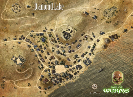
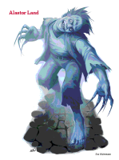
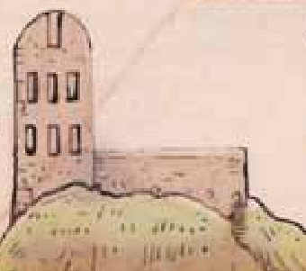

This is the first installment in The Age of Worms, meant for characters of 1st-3rd level.
← Back
The Whispering Cairn
Here Be Dragons!

This article contains substantial information about the Age of Worms adventure path. Players beware!
Adventure Summary
This adventure consists of two parts. The first takes place in the eponymous Whispering Cairn, a pretty classic trapped-tomb dungeon crawl which houses the burying place of an ancient air elemental. Though it initially seems unrelated, the Cairn will return later in the adventure path.
 In the Cairn, the PCs discover the ghost of a previous adventurer, a boy named Alastor Land. He asks them to return his body to his family burial ground. The PCs discover that the graves have been dug up; finding and confronting the perpetrator, a necromancer named Filge, reveals the first clues to the coming of the apocalyptic Age of Worms. This launches the PCs into the main questline of the adventure path.
This adventure also introduces some foundations of the setting. The town of Diamond Lake, whose main industry is iron mining, serves as home base for the characters for the first part of the campaign. The wizard Allustan, who will play a part in future adventures, may also make an appearance.
Initial Impressions
I will not be surprised if, several years from now, I sit down to write my final thoughts on the entirety of Age of Worms, and I still think that the initial plot hook is the weakest part of the entire adventure path.
It's barely a hook at all, more like a statement. The adventure opens with the party preparing to explore a long-forgotten tomb. That's it. It's a step above "you all meet in a bar," I guess?
If your players are happy to play along, this isn't going to hinder you, but it's a missed opportunity. Age of Worms takes characters from the humblest of beginnings all the way to level twenty, where they find themselves the only people in the world with the ability to confront a god and prevent the apocalypse. But the adventure's beginning has nothing to do with that. It doesn't introduce anything that's obviously connected to the title and plot summary the players may have gotten; it doesn't even introduce a problem. The adventure doesn't start with them saving... anything.
It practically encourages anti-heroics. The main suggestion given by the writers is that players should build characters who have motivation to get the hell out of the shitty mining town they started life in, and who need the money to do it. They're treasure-hunters in a campaign which otherwise has very little treasure-hunting to offer. There's an obvious path where the players create selfish, even greedy characters who have no reason to stick around once the plot starts beckoning. Why would they worry and agree to help in later parts of the adventure path? They got their treasure. They can leave town and start new, better lives. Their story is done.
This isn't a problem I've had; my players are invested and amiable, and even if they started with that kind of character they'll put in the work and character development to continue with the story. But it's not just an opportunity for difficulty and conflict at a less friendly table. It's a wasted chance to give the players something to care about.
It's the opening salvo in a battle for the fate of the world, and our heroes are a couple of petty tomb robbers.
I don't think there's any good way to "fix" this without drastically mixing up the sequence of events in the first few adventures. If you wanted to try, you'd probably start with Alastor's family. Someone's digging up graves, and that means not only sorrow to the grieving families, but necromancy. It's just poor farmers at the edge of town, though, so who really cares? Only the PCs, who decide to try and find what's happening. Some PCs could even have family members whose graves were robbed, helping tie them to the place and the cause. Finding their late family members and neighbors in the service of a necromancer would give them a lot more emotional investment early on. For added relevance claim that, as part of standard D&D-verse burial rites, the graves should have been protected from necromancy, suggesting new and terrible developments amongst the forces of evil.
A hook like that would tie PCs to the main plot and the main problem right from the start, and encourage the players to be invested in the larger story.
But then it's a lot harder to work in the Whispering Cairn, and unless you drastically change the Rod of Seven Parts subplot that remains an important location to introduce.
Eh, up to you. Like say, it worked fine at my table, but overall I think it's a poor start to the adventure path.
Inside the Cairn
Despite the weakness in its use as a hook, I think that the Whispering Cairn is a fantastic example of low-level dungeon design. The mechanisms give players problems to investigate, think about, and solve, without relying on whether they can pass or bypass certain skill checks. Non-lethal problems intersperse combat problems, letting them continue exploring without running out of their extremely limited resources. It looks like terrain challenges and otherwise creative battlefields will be a continuing strength of Age of Worms, which is great and is particularly fun at low levels when the party can't just make the wizard fix everything.
It even does a solidly decent job of answering the age-old question, "why are these random 1st-level characters the only people in a millenia to loot this tomb?" (answer: they're not; in fact most of the treaure they recover is from the remains of previous adventurers).
The visuals of the Cairn also make for a great introduction to the sense of history that should eventually cloak the campaign. The events that the PCs are a part of began long ago. There's very cool set pieces here that you can lean into to invoke wonder and excitement; my favorite is the glittering star map that reveals itself once all of the lanterns are lit. One of my players happens to need ranks in profession (astrologer) for a prestige class they plan on taking, so I let them identify the night sky depicted as one from millenia past.
(John Hurt voice) In a land of myth and a time of magic...
The only thing I'd comment is that I think the adventure flows much better if you let the PCs promise to return Alastor's remains and then continue to the final chamber. If, as written, Alastor refuses to open the door until they bury him, it results in very wierd pacing. They have to completely leave the cairn, and the resulting investigation could take several days depending on how quickly they track down Filge. Then they have to enter a completely different, albeit tiny, "dungeon," confront a completely unrelated opponent, learn of the hook to the next part of the adventure...
... and then stop that and go back to the cairn, where they have one (1) short fight and immediately leave again.
Unless your players are likely to try to renege on the deal once they get their treasure, there's no reason to force them to leave and come back. Evaluate your group; if you think they need that leverage, keep it as is, but if they make a sincere promise or vow I think Alastor should be willing to trust them.
Hunting the Necromancer
An enthusiast of mystery, investigative campaigns, and the like would definitely have quibbles with the second part of the adventure, where the characters' attempt to bury Alastor's skeleton leads them on a quest to the ramshackle laboratory of a necromancer. It's a general rule that, if you have "clues" in your TTRPG plot, players will fail to find the first one, misinterpret the next, and forget the one after that. In other words, it's deeply risky to hang your linear prewritten plot on a single point.
It mostly works here because the necessary clues aren't actually locked behind anything. Any attempt by the PCs to search the Land Farm for Clues will find the, er, dead man's arm, for instance, so there's no chokepoint.Other clues are backed up by a multitude of ways for them to learn the same information. If the players don't find and understand Filge's letter, they can also learn what they need from Filge, from his friend and employer Balabar Smenk, or from Allustan turning up to be a DMPC quest-distributor. This is sort of an actual investigation structure, but to my mind it doesn't really count as separate "clues;" it's just different back-ups delivering the same clue. The majority of the adventure path will be a fundamentally linear experience, and this is no exception.
Nevertheless, my table tends to play fairly straightforward, and it that context this "investigation" was plenty fun. It's a chance for players to flex their social muscles instead of their combat ones and show off abilities that weren't so useful in the dungeon crawl, and it lets them have fun with that without ever leaving them feeling directionless. Again, the writers take care to make sure that low-level PCs won't be locked out of the adventure by a single screwup.
Tracking down and confronting Filge is another solid adventure piece. Hokey and heavy-handed though it is, the necromancer's laboratry is deliciously macabre. And hey, most D&D is a 70s pulp fantasy; subtlety does not become us. The house (an old observatory) provides a great battleground, giving plenty of options for the PCs to choose the battlefield - or choose not to battle at all.
(Or they could just kick the front door in. Which my players would never do.)
Final Thoughts
All in all, a very fun low-level adventure with some structural weakness. Good introductions to classic D&D challenges, with unique obstacles that help both challenge and accomodate characters without many resources.
I'm really a fan of this kind of adventure. You put it in front of a group of total newbies, and they can think hell yeah, this is it! We're actually playing D&D! Traps and tombs, zombies and evil wizards, all the hallmarks of a fantasy adventure.
If you're running a simple, straightforward D&D campaign, those weaknesses won't be a problem. If you're more picky about adventure design you may want to reexamine and mix up the investigations, giving the players opportunities for genuine unrailroaded exploring.
As far as advice goes, my main comment to prospective DMs is to read forward and make an effort to introduce Allustan. He'll turn up for real in the third adventure. You can leave him aside until then, but it will be easier if the PCs already know and like him.
I made sure several characters knew of him and his library as a potential source for information, and luckily they chose to go to him when they were trying to understand the history of the Whispering Cairn. The adventure suggests that he may want to buy some of the artifacts they acquire from the Cairn, or that he can help them understand what they recover from Filge's laboratory. If any characters are wizards or similar classes, he can also be approached as a source of new spells.